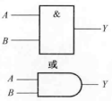
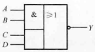

数字逻辑基础
逻辑变量与运算
逻辑变量（也称为 布尔 变量）用于描述客观事物对立统一的两个方面。逻辑代数中常用单个大写字母或者单个大写字母加下标表示逻辑变量。在二值逻辑中，每个逻辑变量只有0和1两种可能，0和1不在具有数值意义，而是表示两种不同的逻辑状态（真和假）。
基本逻辑运算
| 运算名称 | 运算符号 | 图形符号 | 真值表 | 运算特点 |
|---|---|---|---|---|
| 逻辑与（乘） AND |
\(Y=A\cdot B=AB\) |  | A 0 0 1 1 B 0 1 0 1 Y 0 0 0 1 |
有假为假，全真为真 |
| 逻辑或（加） OR |
\(Y=A+B\) | A 0 0 1 1 B 0 1 0 1 Y 0 1 1 1 |
有真为真，全假为假 | |
| 逻辑非（求反） NOT |
\(Y=\overline{A}\) | A 0 1 Y 1 0 |
复合逻辑运算
| 运算名称 | 运算符号 | 图形符号 | 真值表 | 运算特点 |
|---|---|---|---|---|
| 逻辑与非 NAND |
\(Y=\overline{A\cdot B}=\overline{AB}\) | A 0 0 1 1 B 0 1 0 1 Y 1 1 1 0 |
有假为真，全真为假 | |
| 逻辑或非 NOR |
\(Y=\overline{A+B}\) | A 0 0 1 1 B 0 1 0 1 Y 1 0 0 0 |
有真为假，全假为真 | |
| 逻辑与或非 AON |
\(Y=\overline{AB+CD}\) |  | 先与再或后非 | |
| 逻辑异或 XOR |
\(Y=A\cdot \overline{B}+\overline{A}\cdot B=A\oplus B\) |  |
A 0 0 1 1 B 0 1 0 1 Y 0 1 1 0 |
不同为真，相同为假 |
| 逻辑同或 NXOR |
\(Y=A\cdot B+\overline{A}\cdot \overline{B}=A\odot B\) | A 0 0 1 1 B 0 1 0 1 Y 1 0 0 1 |
不同为假，相同为真 |
逻辑代数公式与定理
基本公式
基本公式又称布尔恒等式，它们反映了逻辑代数运算的基本规律，其正确性都可以用列逻辑真值表的方式加以验证。
| 名称 | 公式1 | 公式2 |
|---|---|---|
| 零一律 | \(A\cdot 1=A\) \(A\cdot 0=0\) |
\(A+0=A\) \(A+1=1\) |
| 互补律 | \(A\overline{A}=0\) | \(A+\overline{A}=1\) |
| 重叠律 | \(AA=A\) | \(A+A=A\) |
| 交换律 | \(AB=BA\) | \(A+B=B+A\) |
| 结合律 | \(A(BC)=(AB)C\) | \(A+(B+C)=(A+B)+C\) |
| 分配律 | \(A(B+C)=AB+AC\) | \(A+BC=(A+B)(A+C)\) |
| 反演律 （ 德·摩根 定律） |
\(\overline{AB}=\overline{A}+\overline{B}\) | \(\overline{A+B}=\overline{A}\ \overline{B}\) |
| 对合律 （还原律） |
\(\overline{\overline{A}}=A\) |
常用公式
常用公式是利用基本公式导出的，在逻辑函数的化简可以直接使用。
| 名称 | 公式1 | 公式2 |
|---|---|---|
| 吸收律 | \(A(A+B)=A\) \(A(\overline{A}+B)=AB\) \((A+B)(\overline{A}+C)(B+C)=(A+B)(\overline{A}+C)\) |
\(A+AB=A\) \(A+\overline{A}B=A+B\) \(AB+\overline{A}C+BC=AB+\overline{A}C\) |
基本定理
代入定理：在任何一个含义某个变量的等式中，若用另外一个逻辑式代入式中所有这个变量的位置，则等式仍然成立。
反演定理：对于任意一个逻辑式\(Y\)，若将其中所有的“·”换成“+”、“+”换成“·”、0换成1、1换成0、原变量换成反变量、反变量换成原变量，则得到的结果就是\(\overline{Y}\)。
对于任意一个逻辑式\(Y\)，若将其中所有的“·”换成“+”、“+”换成“·”、0换成1、1换成0，则得到的结果就是\(Y^{\prime}\)。\(Y^{\prime}\)称为\(Y\)的对偶式。
对偶定理：若两逻辑式相等，则它们的对偶式也相等。
在上面基本公式表和常用公式表中，公式1和公式2就是一对对偶式，显然由对偶定理可得，公式1成立，则公式2也成立。
逻辑函数及其表示方式
如果以逻辑变量\(A\)、\(B\)、\(C\)、...作为输入，以运算结果逻辑变量\(Y\)作为输出，那么当输入变量的取值确定后，输出的取值便唯一确定，输入与输出之间是一种函数关系，称\(Y\)是\(A\)、\(B\)、\(C\)、...的逻辑函数。即
下面以“三人表决电路（少数服从多数）”为例说明表示方式。
逻辑真值表
将输入变量的所有取值组合所对应的输出值找出来，列成表格，即可得到逻辑真值表，简称真值表。
| A | B | C | Y |
|---|---|---|---|
| 0 | 0 | 0 | 0 |
| 0 | 0 | 1 | 0 |
| 0 | 1 | 0 | 0 |
| 0 | 1 | 1 | 1 |
| 1 | 0 | 0 | 0 |
| 1 | 0 | 1 | 1 |
| 1 | 1 | 0 | 1 |
| 1 | 1 | 1 | 1 |
逻辑函数式
把输入与输出之间的关系写成与、或、非等运算的组合式，即得到了该逻辑关系的逻辑函数式。
逻辑图
将逻辑函数中各变量之间的与、或、非关系用图形符号表示出来，就可以画出表示逻辑关系的逻辑图。
逻辑函数的标准形式
最小项之和
在\(n\)变量的逻辑函数中，若\(m\)是包含\(n\)个因子的乘积项，这\(n\)个变量均以原变量或反变量的形式在\(m\)中出现且只出现一次，则称\(m\)为这组变量的最小项。最小项的个数为\(2^n\)个。输入变量的每一组取值都使对应的一个最小项逻辑值等于1，将这一组取值组合为二进制数，其对应的十进制数\(i\)作为这个最小项的标记的下标\(m_i\)。
最小项有如下性质：
- 在输入变量的任意取值下必有一个最小项，有且仅有一个最小项的值为1。
- 全体最小项之和为1。
- 任意两个最小项的积为0。
- 具有逻辑相邻性的两个最小项之和可以合并成一项并消去一对因子。
若两个最小项只有一个因子不同，则称这两个最小项具有逻辑相邻性。
利用\(A+\overline{A}=1\)可以把任何一个逻辑函数化为最小项之和的标准形式。
最大项之积
在\(n\)变量的逻辑函数中，若\(M\)是包含\(n\)个变量的和，这\(n\)个变量均以原变量或反变量的形式在\(M\)中出现且只出现一次，则称\(M\)为这组变量的最大项。最大项的个数为\(2^n\)个。输入变量的每一组取值都使对应的一个最大项逻辑值等于0，将这一组取值组合为二进制数，其对应的十进制数\(i\)作为这个最大项的标记的下标\(M_i\)。
最大项有如下性质：
- 在输入变量的任意取值下必有一个最大项，有且仅有一个最大项的值为0。
- 全体最大项之积为0。
- 任意两个最大项的和为1。
- 只有一个变量不同的两个最大项的乘积等于个相同变量之和。
- 相同下标的最大项和最小项的反变量相等，即：
利用性质5可以把任何一个逻辑函数化为最大项之积的标准形式。
逻辑函数的公式化简法
逻辑函数的最简与-或逻辑式（即“积之和”形式）中，要求与项尽可能少，每个与项中的变量数尽可能少。
并项法
利用零一律\(A+\overline{A}=1\),可以将两项合为一项，并消去\(A\)和\(\overline{A}\)这一对因子。由代入定理可知，\(A\)可以是任意复杂的逻辑式。
吸收法
利用吸收律\(A+AB=A\),可以将\(AB\)消去。由代入定理可知，\(A\)和\(B\)都可以是任意复杂的逻辑式。
消去法
利用吸收律\(A+\overline{A}B=A+B\)，消去多余因子。由代入定理可知，\(A\)和\(B\)都可以是任意复杂的逻辑式。
配项法
由于互补律\(A\overline{A}=0\)和\(A+\overline{A}=1\)，可以通过加上\(A\overline{A}\)或乘以\(A+\overline{A}\)，有时会使得化简更容易。
逻辑函数的卡诺图化简
卡诺图及化简
将\(n\)变量的逻辑函数的全部最小项各用一个小方块表示，并使具有逻辑相邻性的最小项在几何位置上也相邻地排列起来，所得的图形称为\(n\)变量的 卡诺 图。

由于卡诺图几何位置相邻与逻辑上相邻一致，所以几何位置相邻的最小项可以合并。合并只剩下公共因子。\(2^n\)个相邻的最小项结合，可以消去\(n\)个取值不同的变量而合并为1项。
卡诺图化简的一般选取原则：
- 用卡诺图化简逻辑函数时，每一个最小项必须被圈，不能遗漏
- 某一个最小项可以多次被圈，但是每次被圈时，圈内至少包含一个新的最小项。
- 圈的个数要尽可能少，圈的大小要尽可能大。
- 每个圈内只能有\(2^n\)个最小项，注意四角相邻性和对边相邻性。
- 有时圈0更方便，但得到的化简结果是原函数的反函数。
具有无关项的卡诺图化简
逻辑函数中不会出现或不允许出现的最小项称为约束项。在某些输入变量的取值下，函数值为1还是为0，都不会影响电路的功能，这些取值等于1的最小项称为任意项，任意项通常由实际应用环境决定。约束项和任意项通称为无关项。
在填卡诺图时，无关项使用“×”表示，在化简逻辑函数时，可以将其看作1或0，但至于看作1还是0，要尽可能为了圈的大小大，圈的个数少考虑。
逻辑函数的变换与实现
逻辑函数的常用表示方法除了与-或式外，还有与非-与非式、或-与式、或非-或非式、与或非式。通过不同的表示，在实现为实际电路时，可以在限定器件或者其它情况下灵活运用。
| 变换 | 方法 |
|---|---|
| 与-或式变换为与非-与非式 | 按还原律两次取反，然后用反演律展开 |
| 与-或式变换为或-与式 | 1.使用\(M_i=\overline{m_i}\)，但得到的结果不一定最简 2.根据对偶定理两次取对偶式，能够得到最简 |
| 与-或式变换为或非-或非式 | 先将与-或式变换为或-与式，再按还原律两次取反，然后用反演律展开 |
| 与-或式变换为与或非式 | 先求“最小项之和”形式，再求反函数的与-或形式，最后取反 |